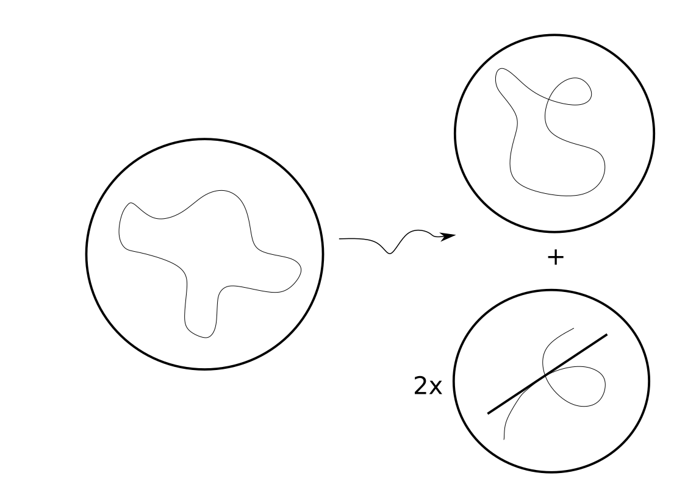
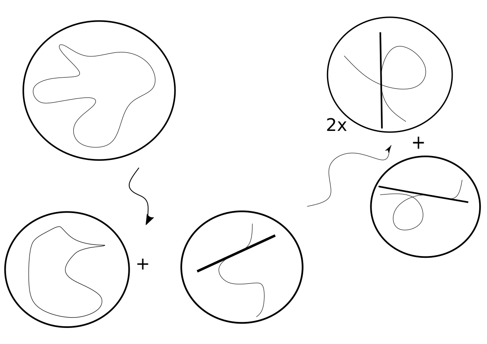
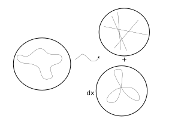
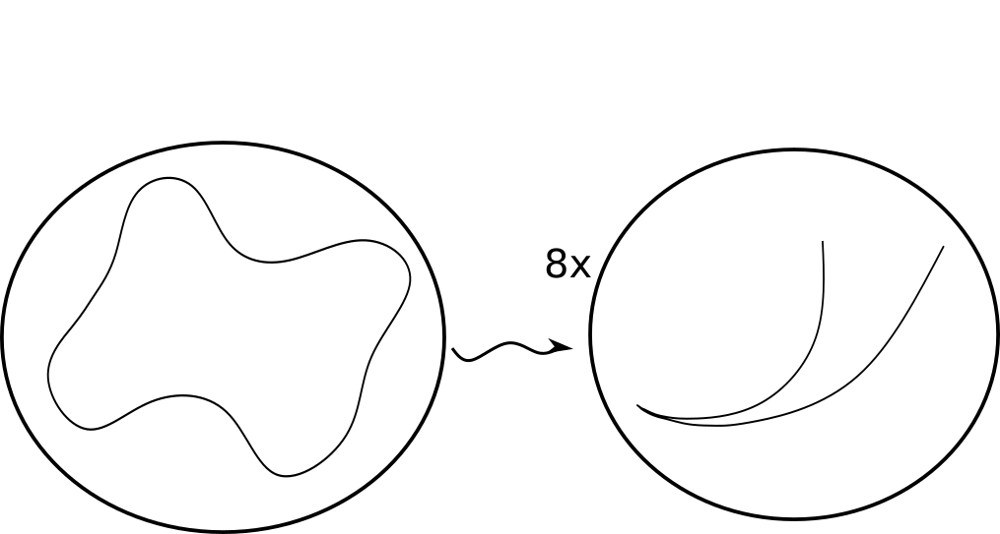
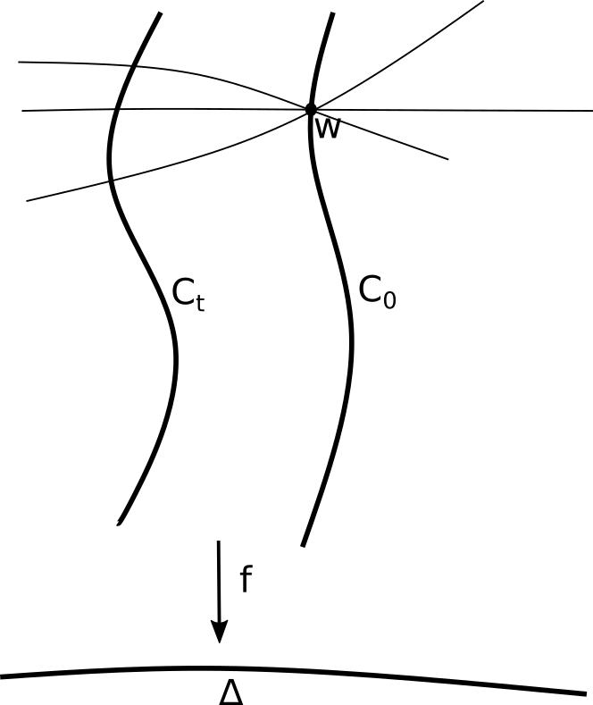
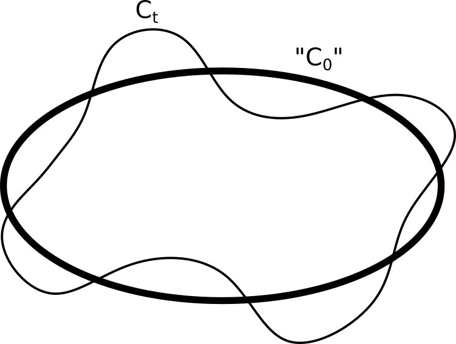
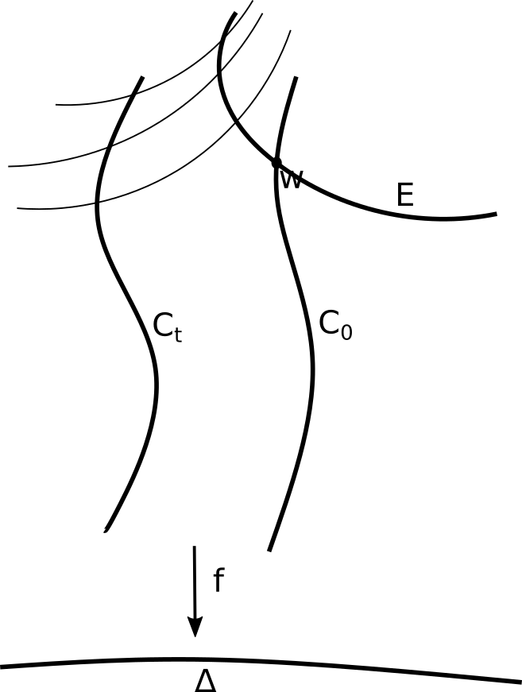
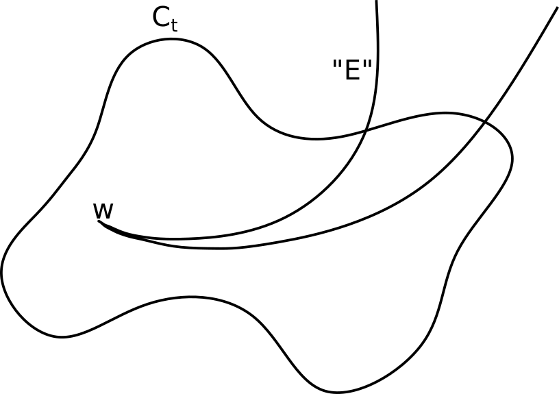

1.1. Summary of Degenerations
When studying degenerations, it is more convenient to weight orbits $\P \Orb(F)$ by the number of linear automorphisms of the hypersurface $X$ given by $F=0$. We will write $\Orb(F)$ and $\Orb(X)$ interchangeably (and similarly for their projectivized versions). In this section, we will exclusively be concerned with the case of plane curves, $r=2$.
If $C_t$ is a family of smooth plane curves specializing at $t=0$ to a curve $C_0$ possessing nodes and cusps, we get a corresponding specialization of the (weighted) orbit closures $\P \Orb(C_{t})$ to some union of $GL(V)$-invariant varieties. Theorem 6.3 [E37E] gives a complete description of the new orbits appearing in the flat limit as $t \to 0$. To illustrate this theorem, we will describe what happens in the special case where the curve acquires a single node or a single cusp. The general case is essentially a sum of contributions corresponding to each node or cusp.
Acquiring a node
If $C_t$ acquires a single node in the limit $C_0$, then as a limit of weighted orbits, one obtains the obvious weighted orbit $\P \Orb(C_{0})$ along with one other weighted orbit, $\P \Orb(C_{BN})$, which occurs with multiplicity 2.

The curve $C_{BN}$ is the union of a nodal cubic with one of its two tangent lines (branches) at the node, the line taken with multiplicity $(d-3)$.
Acquiring a cusp
If $C_t$ acquires a single cusp in the limit $C_0$, then as a limit of weighted orbits, one obtains the weighted orbit of the cuspidal curve $C_{0}$ along with another weighted orbit, $\P \Orb(C_{\on{flex}})$.

\hspace{1in}
The curve $C_{\on{flex}}$ is a smooth cubic (with general $j$-invariant) union a $(d-3)$-fold flex line. We can degenerate the weighted orbit $\P \Orb(C_{\on{flex}})$ even further to get the weighted orbit of $C_{BN}$ from before (with multiplicity 2) together with the weighted orbit of a new curve $C_{AN}$. $C_{AN}$ is the union of a nodal cubic with one of its flex lines (at a smooth point), with the line taken $(d-3)$ times.
In either case, we deduce that the equivariant class $[ \P \Orb({C_{t}})]_{GL(V)}$, for $t$ general, is a particular combination of $[ \P \Orb({C_{0}})]_{GL(V)}$ and two specific classes $[ \P \Orb({C_{BN}})]_{GL(V)}$, and $[ \P \Orb({C_{AN}})]_{GL(V)}$.
Splitting off a line
The equivariant class of the orbit closure of a union of lines can be deduced using the results of [LPST20]. In light of this, it is natural to want to study the degeneration where a degree $d$ plane curve specializes to a union of $d$ general lines. We will show that if $C_t$ is a general family of curves such that $C_0$ is a general union of lines, then in the flat limit of orbit closures, beyond the obvious orbit closure $\P \Orb({C_{0}})$ we find $d$ other orbits, each being the weighted orbit of a general irreducible plane curve possessing a multiplicity $d-1$ point.

More generally, we also study specializations where $C_0$ is a union of a general degree $e$ curve along with $d-e$ general lines (see Proposition 5.3 [A0C6]).
Degeneration to the Double Conic
Next suppose $C_t$ is a family of general plane quartics specializing to a double conic – a classic example in the study of moduli of curves. Since a double conic has a large stabilizer group under the action of $PGL(V)$, its orbit closure will not appear as an irreducible component of the $t \to 0$ flat limit of orbit closures. We will show (in Theorem 8.7 [1985]) that in this situation, the weighted orbit of $C_t$ specializes to $8$ times the weighted orbit of a particular rational quartic curve possessing an $A_6$ singularity.

It is striking that the limit has such a clean answer, consisting set-theoretically of the orbit closure of the irreducible quartic plane curve with an $A_6$ singularity. This fact is related to the question of which planar quartics account for a general hyperelliptic curve after applying semistable reduction. The multiplicity 8 we obtain corresponds to the 8 Weierstrass points on a genus 3 hyperelliptic curve. For literature relevant to this circle of ideas, see [Pin74, Has00, CML13, Fed14]. \begin{comment} The motivation for this, and for specializing to the double conic is as follows. Consider the rational map $$\begin{aligned}\pi: \mathbb{P}^{14}\dashrightarrow \overline{\mathcal{M}_3}\end{aligned}$$ given by sending a quartic plane curve to its moduli. Recall the canonical map on a smooth genus 3 curve $C\to \mb{P}^2$ is an embedding as a plane quartic, except when $C$ is hyperelliptic, where the map is 2 to 1 onto a conic. Since the orbit of a general quartic is the closure of the fiber of $\pi$ over a general point in $[C]\in \overline{\mathcal{M}_3}$, it makes sense to ask what happens when we specialize $C$ to a general hyperelliptic curve.
On a related note, we can search for plane quartics (with $8$-dimensional orbit closures) which can yield a general hyperelliptic curve after semistable reduction. A dimension count shows such a plane quartic must be irreducible and reduced. Then, we know that such a plane quartic must be rational with a single unibranch singularity. This leaves only rational quartics with an $A_6$ or an $E_6$ singularity. In fact, the rational curves with an $E_6$ singularity are linked with smooth quartics possessing a hyperflex (see Section 8.4), so specializing $[C]$ to a general hyperelliptic curve equates the orbit closure of a general quartic curve with some multiple of the closure of the quartic curves consisting of $A_6$ singularities. Tails arising from semistable reductions of singularities have been studied in [Pin74, Has00, Fed14]. \begin{comment} In fact, there is

\hspace{.5in}

\hspace{.5in}

\hspace{.5in}

\end{comment}
\begin{comment}
Let $C$ be a smooth quartic curve which possesses $m$ hyperflexes. Let $C_{A_n}, C_{E_6}, C_{D_4}$ denote general smooth quartics possessing an $A_n$ singularity, an $E_6$ singularity, and an ordinary triple point respectively. For $0\leq i\leq 3$, let $C_i$ be a quartic curve given by the union of $i$ general lines and a general degree $4-i$ curve. Then the following relations hold: \begin{alignat*}{2} [O_C] &= 8[O_{C_{A_6}}]-m[O_{C_{E_6}}]\\ [O_{C_{A_n}}]&= (7-n)[O_{C_{A_6}}]&\text{for $3\leq n\leq 6$}\\ [O_{C_{D_4}}]&=\frac{1}{4}(8[O_{C_{A_6}}]-[O_{C_3}])\\ [O_{C_{i}}]-[O_{C_{i+1}}] &= [O_{C_{D_4}}] &\text{for $0\leq i\leq 2$}. \end{alignat*}
\end{comment}
Comments
No comments yet.
Leave a comment
Comments are reviewed before appearing. Your comment will be emailed to the author for approval.
For any reader experienced in the art of degeneration, the fact that the curves with $(d-1)$-fold points arise in the limit is not a surprise. The difficulty lies in showing that all new orbits are accounted for.